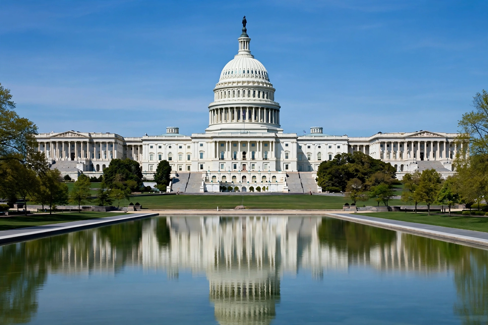

The United States Capitol, often called the Capitol or Capitol Building, is the seat of the United States Congress and the seat of the legislative branch of the federal government. It stands atop Capitol Hill in Washington, D.C., at the eastern end of the National Mall.

George Washington laid the cornerstone in 1793 to a design by William Thornton, later modified by Benjamin Latrobe and Charles Bulfinch. British troops burned it in 1814; reconstruction followed. The present cast-iron dome and enlarged wings, designed by Thomas U. Walter, were completed during the Civil War; the Statue of Freedom was placed atop in 1863.
The building houses the Senate in the north wing and the House of Representatives in the south wing, with the Rotunda beneath the dome, National Statuary Hall, and notable art including Constantino Brumidi's Apotheosis of Washington. The Capitol Visitor Center opened in 2008.
The Capitol hosts presidential inaugurations, lying in state ceremonies, and was attacked on 6 January 2021 during certification of the electoral vote.